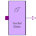

InertialDelayInertial delay with initial parameter |

|
Information
This information is part of the Modelica Standard Library maintained by the Modelica Association.
Provides the input as output delayed by delayTime if the input holds its value for a longer time than delayTime. If time is less than delayTime the initial value y0 holds.
Parameters (2)
Connectors (2)
| x |
Type: DigitalInput Description: Connector of Digital input signal |
|
|---|---|---|
| y |
Type: DigitalOutput Description: Connector of Digital output signal |